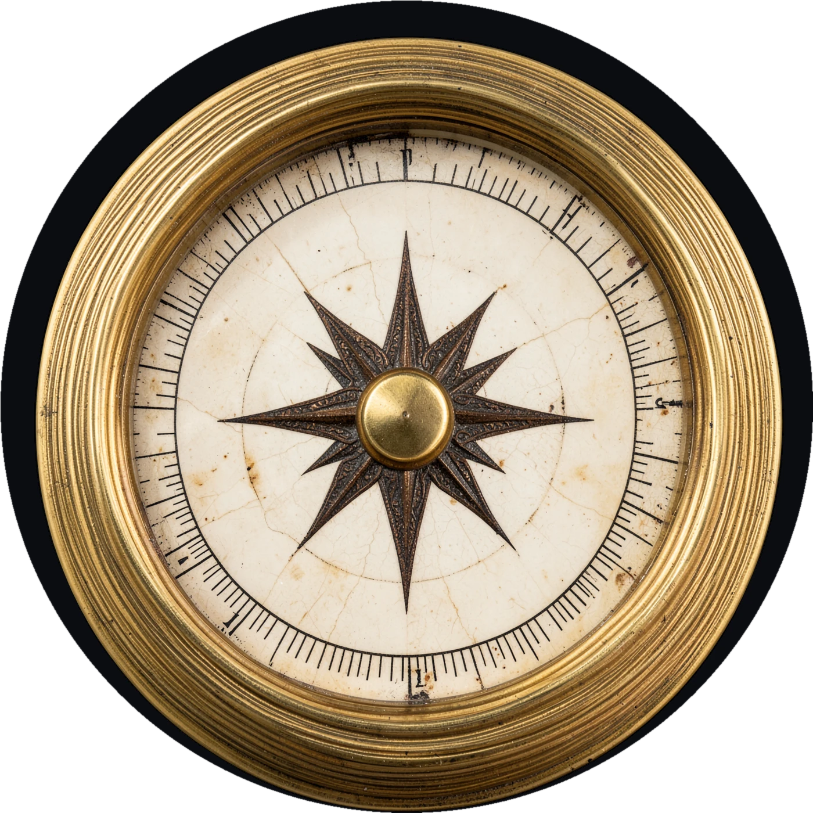
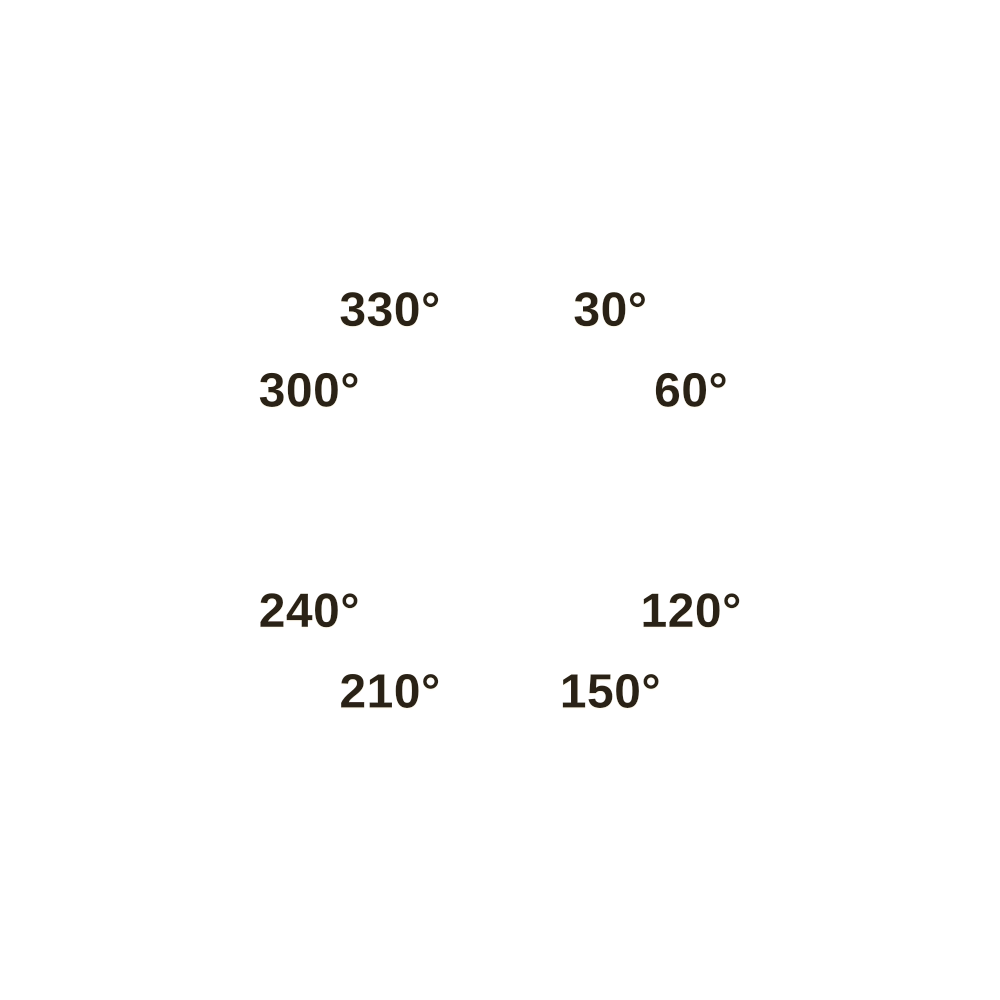
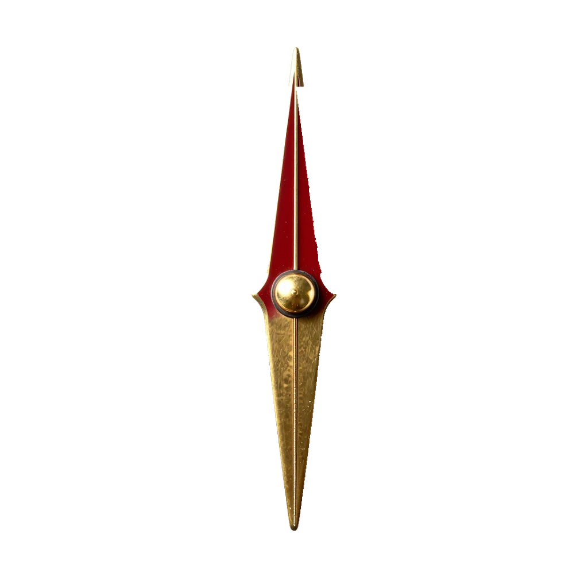

微信里拿不到手机方向，罗盘不会跟着你转。点右上角 ··· → 在浏览器打开。
成都 · 今天
今天去哪？
说一个地方。罗盘只指方向，剩下的靠你和路人。
⌕
精选去处
朋友挑战：去「」，同样的起点
没有地图，没有路线，没有距离。
会场模式
会场寻宝
五站故事，或三站评委局。选一个走法。
更多玩法在探索里：选一个目的地，再选「手机模拟」。
提示灯
每站 3 条提示。教学站免费；解谜站每看一条耗 1 盏灯，共 3 盏。问路不扣灯。
中途可暂停；退出会保留进度。
先看看眼前的东西
你要去
目的地
成都 · 锦江
公共场所
不显示距离
到达后自动记录
知道了距离就没意思了。方向交给罗盘，路交给脚。



出发后，罗盘只指它
随时可以退出。没有人会扣分。
方向自检
这台手机的浏览器没有给方向数据
它不支持网页读取手机朝向，所以进了真实城市，指针也不会跟着你转。
定位和「我到了」不受影响。
可以换个浏览器（Chrome / 系统浏览器）再试，或者选下面一种继续。
旅伴
一句话，铸造你的旅伴
比如：一个嘴硬心软、总爱叹气的铜罗盘。
 自由行
已集 0 / 5 枚
00:00
自由行
已集 0 / 5 枚
00:00
没检测到罗盘：拖动表盘模拟
点方向键走一步。撞墙会停。
轻量验码 · 不作为到访证明
文字自动保存 · 只在这台手机上
保存抵达证明